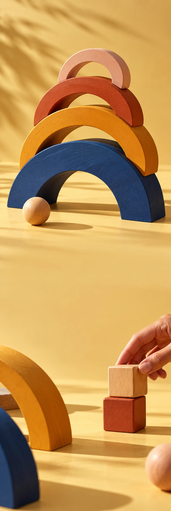

TOVA PLAY
SpeelgoedCollectiedrop
TOVA PLAY / ROOM FOR IMAGINATION
DAT KAN
OOK ANDERS.
Ontdek de speelvormen TOVA PLAY / VAN DICHTBIJ
Niets vast.
Alles mogelijk.
Stapel. Schuif. Begin weer opnieuw. Met open vormen en vrolijke kleuren krijgt elk verhaal de ruimte om iets anders te worden.
01Stapelen
02Verzinnen
03Opnieuw beginnen
WAT MAAK
JIJ ERVAN?
Een boog is pas een brug als jij dat zegt.
Ontdek de speelvormen